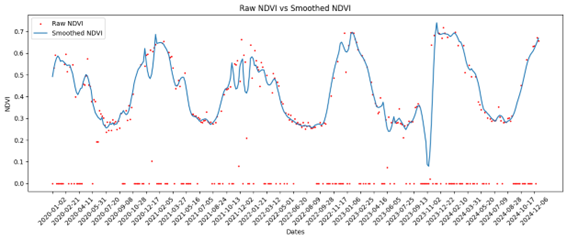
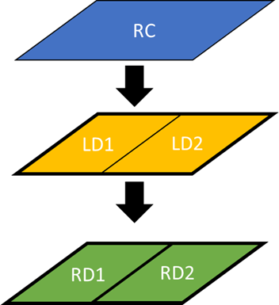

FEGA — Herramienta y resultados
FEGA es un proyecto que incluye una aplicación para la detección y visualización de indicadores sobre parcelas y series temporales. Aquí se muestran capturas de la aplicación, ejemplos de series filtradas y diagramas de resultado.

Documentación y materiales: